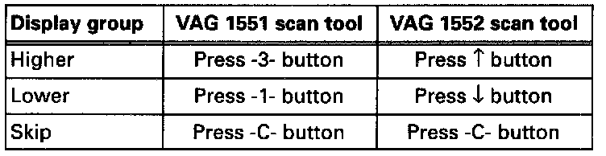
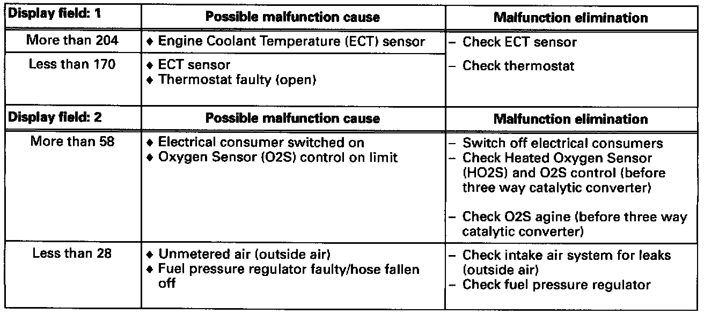

Read Measuring Value Block (Function 08)
NOTE:To change to another display group proceed as follows:

Test conditions:
- Control module in "Read Measuring Value Block" function 08.
- Vehicle stationary, engine idling.
- Engine oil temperature min. 80°C (176°F).
- Electrical consumers switched off (radiator coolant fan must not run during the check).
- Air conditioner switched off.
Display group overview

- If one of the specifications are not attained See evaluating display group 000.
- For additional steps see Repair procedures:
NOTES:
- Press -> button to end "Read Measuring Value Block".
- After terminating "Read Measuring Value Block", press buttons -0- and -6- to input "End Output" function 06 and press -Q- button to confirm input.
Evaluating display group 000
Display Field 1, 2:

Display Field 3, 4, 5:

Display Field 6 + 7, 8:

Display Field 9, 10: